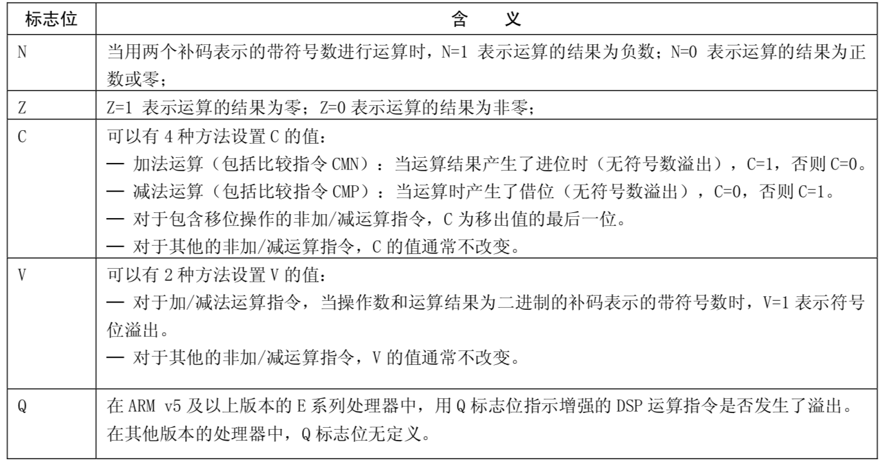

0x01 精简指令集RISC（Reduced Instruction Set Computer）
ARM是RISC的代表，RISC具有以下几个特点：
- 简单的指令集：只提供很有限的操作
- 等长指令集：执行指令速度快且性能稳定，可将一条指令分割成若干个进程或线程，交由多个处理器同时执行。
- Load/Store架构：CPU并不会对内存中的数据进行操作，所有的计算都要求在寄存器中完成，而寄存器和内存的通信由Load/Store指令完成。
- 更多的寄存器：基于RISC的处理器具有更多的通用寄存器可以使用，且每个寄存器都可以进行数据存储或寻址。
- 效率更高：RISC指令集能够非常有效地适合于采用流水线、超流水线和超标量技术，从而实现指令集并行操作，提高处理器的性能。
0x02 寄存器
1. 简介
寄存器是CPU的一个组成部分，里面存放着指令、数据和地址等供CPU计算使用，速度比内存快。寄存器分为通用寄存器和专用寄存器。
通用寄存器
提供了31个64位通用寄存器，x0 ~ x30。
可以通过w0 ~ w30来访问这31个64位寄存器的低32位，写入时会将高32位清零。
注：后面文章中wn其实也可以代表xn，它们之间只是位数不同。
浮点寄存器
v0 ~ v31，一共有32个浮点寄存器，每个寄存器大小是128位。分别可以用的方式来访问不同的位数。可以通过Bn、Hn、Sn、Dn、Qn来访问不同的位数。
Bn：8位
Hn：16位
Sn：32位
Dn：64位
Qn：128位
特殊寄存器
程序计数器
- pc，保存着当前CPU执行指令的地址。不能用作算数指令的源或目的地以及用作加载或存储指令。
堆栈指针
- sp，即x31，指向堆栈的顶部。sp不能被大多数指令引用， 但一些算术指令，例如ADD指令，可以读写当前的堆栈指针来调整函数中的堆栈指针。每个异常级别都有一个专用的SP寄存器。
- fp，即x29，帧指针，指向当前frame的栈底，也就是高地址。
链接寄存器
- lr，即x30，存储着函数的返回地址。
程序状态寄存器
在汇编中通过状态寄存器来控制分支的执行。
- cpsr：与其他寄存器不太一样，其他寄存器用来存储数据的，但是这个寄存器是，按位起作用的，每一位都有专门的含义。
- spsr：当发生异常时，cpsr会存入spsr直到异常恢复再复制回cpsr。


2. 模式与异常等级
2.1 模式
- 用户模式(USR): ARM处理器正常程序执行状态。
- 快速中断模式(FIQ): 高速数据传输或通道处理。
- 外部中断模式(IRQ): 通用的中断处理。
- 管理模式(supervisor): 操作系统使用的保护模式。
- 数据访问终止模式(abort): 当数据或指令预取终止时进入该模式，可用于虚拟存储及存储保护。
- 系统模式(system): 运行具有特权的操作系统任务。
- 未定义指令终止模式(UND)：当未定义的指令执行时进入该模式。
- hyp：用于虚拟化扩展。
- monitor：用于Security扩展。
2.2 异常等级
- EL0：非特权用户模式
- EL1：操作系统内核
- EL2：Hypervisor，虚拟扩展
- EL3：Secure Monitor，安全扩展。实现EL0和EL1的Secure和Non-Secure之间的切换，可起到物理屏障安全隔离作用。
2.3 模式与异常等级之间的关系
user模式：只能在EL0执行
monitor模式：只能在Secure的EL3执行
hyp模式：只能在Non-Secure的EL2执行，虚拟机。
system，supervisor，abort，undefined，IRQ，FIQ模式：依赖于Secure模式

0x02 指令
我们首先工程里创建一个.h文件和一个.s文件
接着，在头文件声明一个test方法
汇编文件里，声明一个global，表示_test那块指令是可以暴露出给外面调用的
准备工作结束后，以后使用的时候就加入asm.h头文件就可以调用相关函数。接着，我们开始认识一些常用的指令
mov
mov指令的格式为：mov{条件}{s} 目的寄存器，源操作数
mov指令可完成从另一个寄存器、被移位的寄存器或将一个立即数加载到目的寄存器。其中s选项决定指令的操作是否影响CPSR中条件标志位的值，当没有s时指令不更新CPSR中条件标志位的值。
1 | .text |
mvn
mvn指令的格式为：mvn{条件}{s} 目的寄存器，源操作数
mvn指令可完成从另一个寄存器被移位的寄存器或将一个立即数加载到目的寄存器。与mov指令不同之处是在传送之前按位被取反了，即把一个被取反的值传送到目的寄存器中。 其中s选项决定指令的操作是否影响CPSR中条件标志位的值，当没有s时指令不更新CPSR中条件标志位的值。
1 | .text |
add
add指令的格式为：add{条件}{s} 目的寄存器，操作数1，操作数2
add指令用于把两个操作数相加，并将结果存放到目的寄存器中。操作数1应是一个寄存器，操作数2可以是一个寄存器，被移位的寄存器，或一个立即数
1 | .text |
adc
adc指令的格式为：adc{条件}{s} 目的寄存器，操作数1，操作数2
adc指令用于把两个操作数相加，再加上CPSR中的C条件标志位的值，并将结果存放到目的寄存器中。它使用一个进位标志位，这样就可以做比64位大的数的加法，注意不要忘记设置s后缀来更改进位标志。操作数1应是一个寄存器，操作数2可以是一个寄存器，被移位的寄存器，或一个立即数。
sub
sub指令的格式为：sub{条件}{s} 目的寄存器，操作数1，操作数2
sub指令用于把操作数1减去操作数2，并将结果存放到目的寄存器。操作数1应是一个寄存器，操作数2可以是一个寄存器，被移位的寄存器，或一个立即数。该指令可用于有符号数或无符号数的减法运算。
1 | .text |
sbc
sbc指令的格式为：sbc{条件}{s} 目的寄存器，操作数1，操作数2
sbc指令用于把操作数1减去操作数2，再减去CPSR中的C条件标志位的反码，并将结果存放到目的寄存器中。操作数1应是一个寄存器，操作数2可以是一个寄存器，被移位的寄存器，或一个立即数。该指令使用进位标志来表示借位，这样就可以做大于32位的减法，注意不要忘记设置s后缀来更改进位标志。该指令可用于有符号数或无符号数的减法运算。
mul
mul指令的格式为：mul{条件}{s} 目的寄存器，操作数1，操作数2
mul指令完成将操作数1与操作数2的乘法运算，并把结果放置到目的寄存器中，同时可以根据运算结果设置CPSR中相应的条件标志位。其中，操作数1和操作数2均为64位的有符号或无符号数。
1 | .text |
and
and指令的格式为：and{条件}{s} 目的寄存器，操作数1，操作数2
and指令用于在两个操作数上进行逻辑与运算，并把结果放置到目的寄存器中。操作数1应是一个寄存器，操作数2可以是一个寄存器，被移位的寄存器，或一个立即数。该指令常用于屏蔽操作数1的某些位。
1 | .text |
orr
orr指令的格式为：orr{条件}{s} 目的寄存器，操作数1，操作数2
orr指令用于在两个操作数上进行逻辑或运算，并把结果放置到目的寄存器中。操作数1应是一个寄存器，操作数2可以是一个寄存器，被移位的寄存器，或一个立即数。该指令常用于设置操作1的某些位。
1 | .text |
eor
eor指令的格式为：eor{条件}{s} 目的寄存器，操作数1，操作数2
eor指令用于在两个操作数上进行逻辑异或运算，并把结果放置到目的寄存器中操作数1应是一个寄存器，操作数2可以是一个寄存器，被移位的寄存器，或一个立即数。该指令常用于反转操作数1的某些位。
1 | .text |
tst
tst指令的格式为：tst{条件} 操作数1，操作数2
tst指令用于把一个寄存器的内容和另一个寄存器的内容或立即数进行按位与运算，并根据运算结果更新CPSR中条件标志位的值。操作数1是要测试的数据，而操作数2是一个位掩码，该指令一般用来检测是否设置了特定的位。
1 | .text |
str
str指令的格式为：tst{条件} 源寄存器，<存储器地址>
str指令用于从源寄存器中将一个64位或32位(看使用rn还是wn)的字节数据传送到存储器中。
str的示例与ldr一起说明。
ldr
ldr指令的格式为：ldr{条件} 目的寄存器，<存储器地址>
ldr指令用于从存储器中将一个64位或32位(看使用rn还是wn)的字节数据传送到目的寄存器中。当程序计数器pc作为目的寄存器时，指令从存储器中读取的字节数据被当做目的地址，从而可以实现程序流程的跳转。
1 | .text |
b
b指令的格式为：b{条件} 目标地址
b指令是最简单的跳转指令。一个遇到一个b指令，ARM处理器将立即跳转到给定的目标地址，从那里继续执行。
1 | .text |
bl
b指令的格式为：bl{条件} 目标地址
同样是跳转指令，但是在跳转之前，会在lr寄存器中保存pc的当前内容，因此，可以通过将lr的内容重新加载到pc中，来返回到跳转指令之后的那个指令处执行。
0x03 栈
一个简单汇编代码
首先，我们看下最简单的汇编是什么样的，我们定义两个局部变量：
1 | int main(int argc, char * argv[]) { |
我们Xcode的Debug -> Debug Workflow -> Always Show Disassembly，打开始终显示汇编，这样断点的时候就直接以汇编代码呈现了：
1 | main: |
当然我们也可以直接用命令进行转换：
xcrun -sdk iphoneos clang -S -arch arm64 main.m
我们需要知道iOS是小端模式，所以汇编中的栈是由高地址向低地址传递数据，栈底是高地址，栈顶是低地址。在编译器生成汇编时，首先会计算需要的栈空间大小，并利用sp指针向低地址开辟相应的空间，在上面的汇编代码中，需要开辟0x20(即32)字节的栈空间。即，刚开始的栈如下图：
这个例子中，我们会一行一行阅读汇编指令
- sub sp, sp, #0x20 ; sp指针往低地址移动32字节，sp指针指向了新地址
- orr w8, wzr, #0x3 ; 3与零寄存器取或，得到的值存到w8寄存器，这里就是把3放到w8寄存器
- orr w9, wzr, #0x2 ; 2与零寄存器取或，得到的值存到w9寄存器，这里就是把2放到w9寄存器
- str wzr, [sp, #0x1c] ; 从sp地址+28个字节为基地址开始的4个字节内的数据用零寄存器内的数据填充
- str w0, [sp, #0x18] ; 从sp地址+24个字节为基地址开始的4个字节内的数据用w0寄存器内的数据填充
- str x1, [sp, #0x10] ; 从sp地址+16个字节为基地址开始的8个字节内的数据用x1寄存器内的数据填充
- str w9, [sp, #0xc] ; 从sp地址+12个字节为基地址开始的4个字节内的数据用w9寄存器内的值(即2)填充
- str w8, [sp, #0x8] ; 从sp地址+8个字节为基地址开始的4个字节内的数据用w8寄存器内的值(即3)填充
- ldr w8, [sp, #0xc] ; 把从sp地址+12个字节为基地址开始的4个字节的数据放到w8寄存器
- ldr w9, [sp, #0x8] ; 把从sp地址+8个字节为基地址开始的4个字节的数据放到w9寄存器
- add w0, w8, w9 ; 把w8和w9寄存器内的值相加，保存到w0寄存器，即返回操作，return的值保存在w0寄存器。
- add sp, sp, #0x20 ; sp指针往高地址移动32个字节，即回到最初的位置
这里还需要注意的是，我们的函数返回结果是保存在寄存器w0(如果是64位则是x0)中的，但也不是也只有这一个寄存器可以用作保存返回结果，w0~w7一共8个寄存器都是可以使用的。而且为什么需要开启32字节的栈空间，明明我们用不到那么多，那是因为ARM规定sp必须16字节对齐。
堆栈平衡
前面的示例代码中，或许你对于代码开始时的sub sp, sp, #0x20和结束时的add sp, sp, #0x20感到好奇，其实这样做就是维持栈平衡，特别最后的add sp, sp, #0x20表示的就退栈，前面开辟了多少空间，函数调用结束的时候就需要恢复成函数调用前的样子。如果每次只有开辟空间，没有退栈操作，那么很快我们的栈将会被使用完毕。
这也就解释了，函数内的为什么变量都存在栈区，并且为什么函数调用结束后，函数内的变量就会被释放掉。
函数的参数传递和调用约定
那么在汇编代码中，参数是如何进行传递的？我们通过下面这段示例来了解下：
1 | int add(int a, int b) { |
将add函数转换成汇编代码：
1 | add: |
我们在add函数内部打下断点，通过lldb的register指令读取下x0和x1寄存器的值：
1 | (lldb) register read/d w0 |
可以发现，函数参数是通过寄存器进行传递的，那么是不是如果函数参数很多很多，所有寄存器都可以用来保存函数参数？我们把示例改下：
1 | int add(int a, int b, int c, int d, int e, int f, int g, int h, int i, int j, int k, int l, int m) { |
事实上，能用作保存函数参数的寄存器只有8个分别是w0~w7，其他都是保存到栈上了，加上前面已经提到过的函数返回结果保存在w0(当然你也可以写在w0~w7任意一个)。这种调用约定也称为ATPCS。
函数跳转
回到之前的例子：
1 | int add(int a, int b) { |
上面的代码流程大致是下面这样的：
代码中，一开始做了保存现场的操作。首先讲下为什么要保存fp寄存器里的值？因为fp寄存器可能正在被之前一个函数用着，如果不保存，对调用本函数的函数其栈区就乱了，因为我们要知道的是sp与fp之间的空间就是函数的栈空间，所以必须保存已保证栈的正确性。
其次，为什么需要保存lr寄存器里的值，我们知道lr保存着函数返回地址，有了它，函数才能知道我结束后该跳转到哪里，假设我们不保存会有什么后面，但我们执行bl 0x10280e718这条指令的时候，bl指令会将bl下一条指令的地址保存进lr寄存器里，所以在这个例子里，bl执行完毕后会来到0x10280e764这个位置继续往后执行，如果后面没做恢复操作，在执行到ret指令后，会又来到0x10280e764这个位置一直死循环。所以只有之前保存过lr寄存器值，然后再后面又恢复数据给lr寄存器，ret指令才能正确跳转。
需要提一个概念，叶子函数和非叶子函数
- 叶子函数：函数内部不再调用其他函数的函数
- 非叶子函数：函数内部还在调用其他函数的函数